Bart Van de Velde en Kristien Van de Wiele tekenen woningen, appartementen, interieurs en bedrijfsgebouwen. Met oog voor licht, verhoudingen en uw budget.
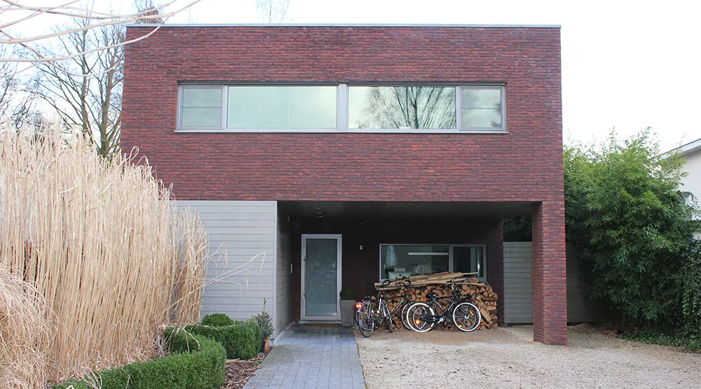
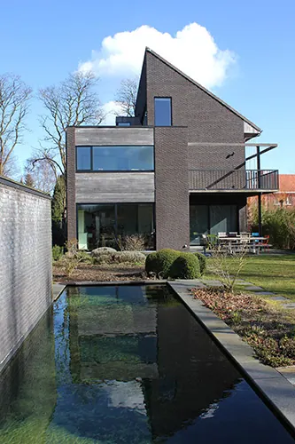
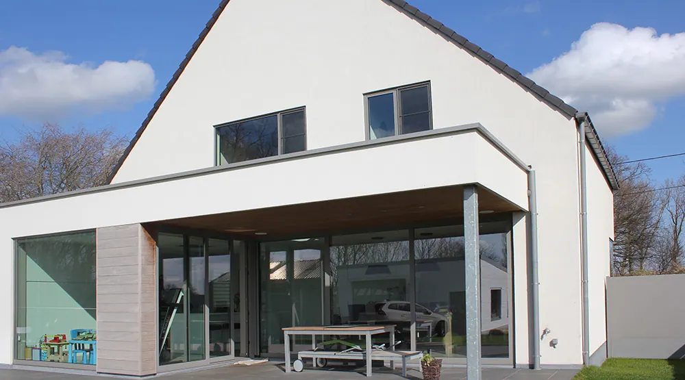
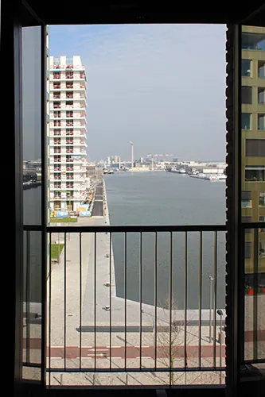
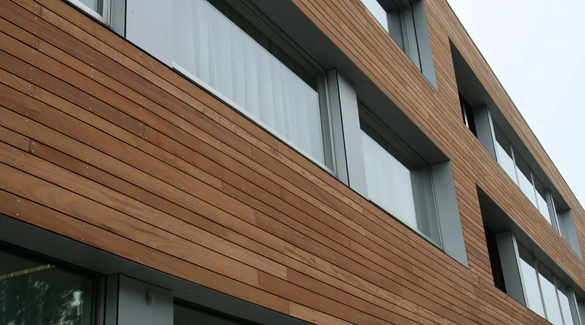
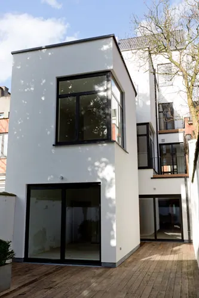
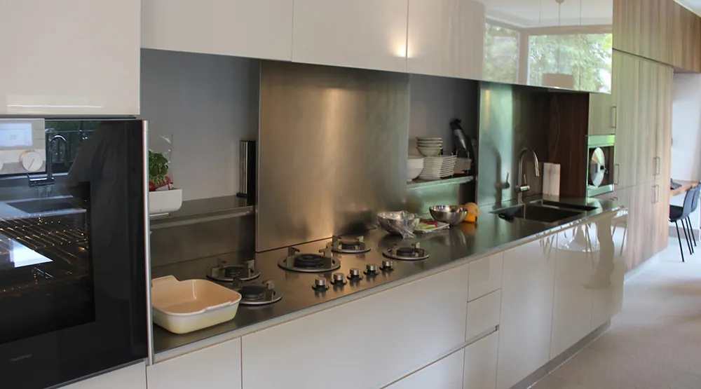
Twee architecten onder één dak, die een project tot in de details uitwerken. Ook op een perceel van vijf meter breed.
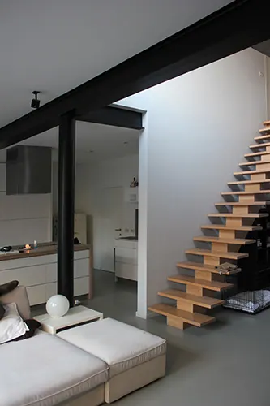
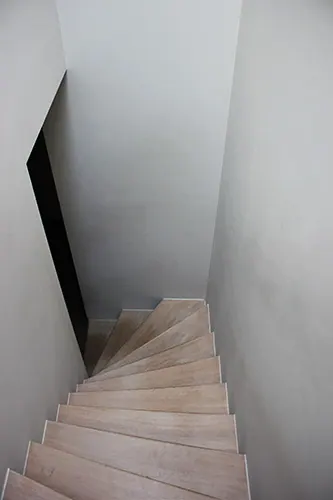
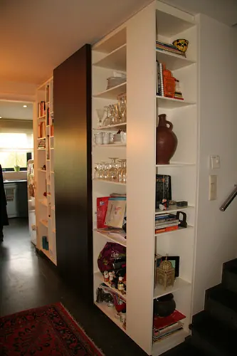
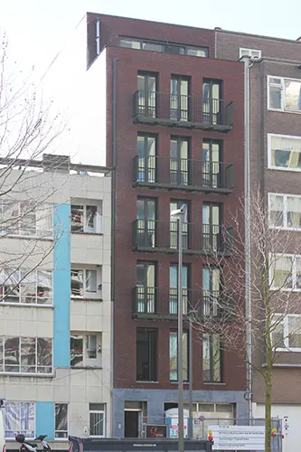
Jaar en volgnummer, zoals op elk plan. Kies een project om het te zien.
Voor particulieren, ontwikkelaars en bedrijven, in nieuwbouw en verbouwing.
Van rijwoning tot villa.
Opbrengsteigendommen en reconversies.
Maatmeubilair en herindeling.
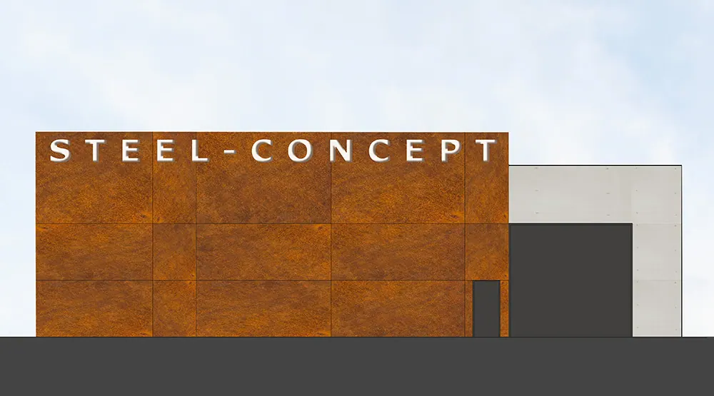
Ateliers, bedrijven, studentenkamers.
Een helder concept en een strikte bewaking van planning en budget.
Uw vraag, uw perceel of gebouw en uw budget.
Soms leidt een studie tot een beter antwoord dan de eerste vraag.
Overleg met de overheid en het dossier.
Detaillering, aanbesteding en werf tot de oplevering.
Vijf sterren op Google. Een korte review helpt anderen hun architect te vinden.
Vaak wel. Door de kamerstructuur open te trekken, een vide te maken en trappen te verplaatsen komt het licht dieper in huis.
Ja. Een helder concept en strikte bewaking van planning en budget horen bij elke opdracht.
Zeker. Het buro maakte al appartementen van een kantoorgebouw, woningen van een loods en studentenkamers van een hoekpand.
Ja. Maatmeubilair en herindeling van leefruimtes zijn een vast onderdeel van het werk.
Ik maakte deze demo voor u om te tonen wat er kan. Na een kort gesprek maak ik er iets veel persoonlijkers van, helemaal naar uw wens.
Vrijblijvend. Ik kom langs of we bellen.
Op maat, op uw eigen domein.
Geen voorschot. U betaalt pas als alles klaar is.
Hosting, domeinnaam en kleine wijzigingen, zoals nieuwe openingsuren.
Omdat een voorbeeld meer zegt dan een mail. Zo ziet u meteen wat er kan, en het kost u niets.
Nee. Het gesprek is vrijblijvend. Vindt u het niks, dan is het daarmee gedaan.
Na ons gesprek staat uw site binnen 10 tot 14 dagen online.
Zeker. Uw domeinnaam kan gewoon blijven, de nieuwe site komt in de plaats van de oude.
Nee, dat doe ik op basis van ons gesprek. Eigen foto's zijn mooi meegenomen, maar niet nodig om te starten.